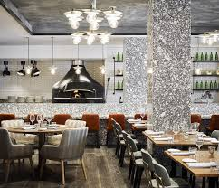

ratatoille
A restaurant is an establishment that prepares and serves food and drinks to customers.[1] Meals are generally served and eaten on the premises, but many restaurants also offer take-out and food delivery services. Restaurants vary greatly in appearance and offerings, including a wide variety of cuisines and service models ranging from inexpensive fast-food restaurants and cafeterias to mid-priced family restaurants, to high-priced luxury establishments. Etymology The word derives from the early 19th century, taken from the French word restaurer 'provide meat for', literally 'restore to a former state'[2] and, being the present participle of the verb,[3] the term restaurant may have been used in 1507 as a "restorative beverage", and in correspondence in 1521 to mean 'that which restores the strength, a fortifying food or remedy'.[4]
ratatoille
ratatoille
Ratatouille (/ˌrætəˈtuːi/ RAT-ə-TOO-ee, French: [ʁatatuj] ⓘ; Occitan: ratatolha [ʀataˈtuʎɔ] ⓘ) is a French Provençal dish of stewed vegetables that originated in Nice and is sometimes referred to as ratatouille niçoise (French: [niswaz]).[1] Recipes and cooking times differ widely, but common ingredients include tomato, garlic, onion, courgette (zucchini), aubergine (eggplant, brinjal), capsicum (bell pepper), and some combination of leafy green herbs common to the region, such as chives or fennel.
see ingreientsdosa

dosa
A dosa (known locally as dosey, dosaë, dosai, dosha, dose, or dhosa) is a thin, savoury crepe in Indian cuisine made from a fermented batter of ground black gram and rice. Dosas are served hot, often with chutney and sambar (a lentil-based vegetable stew). see ingreients
idli

dosa
Idli or idly (/ˈɪdliː/; plural: idlis) or iddali or iddena is a type of savoury rice cake, originating from South India, popular as a breakfast food in Southern India and in Sri Lanka. The cakes are made by steaming a batter consisting of fermented de-husked black lentils and rice. The fermentation process breaks down the starches so that they are more readily metabolised by the body. Idli has several variations, including rava idli, which is made from semolina. Regional variants include sanna of Konkan. see ingreients
momos
dosa
Momos[a] are a type of steamed filled dumpling in Tibetan[1] and Nepali cuisine[2] that is also popular in neighbouring Bhutan, Bangladesh, and India.[3][4] The majority of Tibetan momos are half-moon in shape like jiaozi, while Nepali momos are normally round like baozi.[5][6] Momos are usually served with a sauce known as achar influenced by the spices and herbs used within many South Asian cuisines. It can also be used in soup, as in jhol momo and mokthuk. see ingreients
contact us
linkedin
github